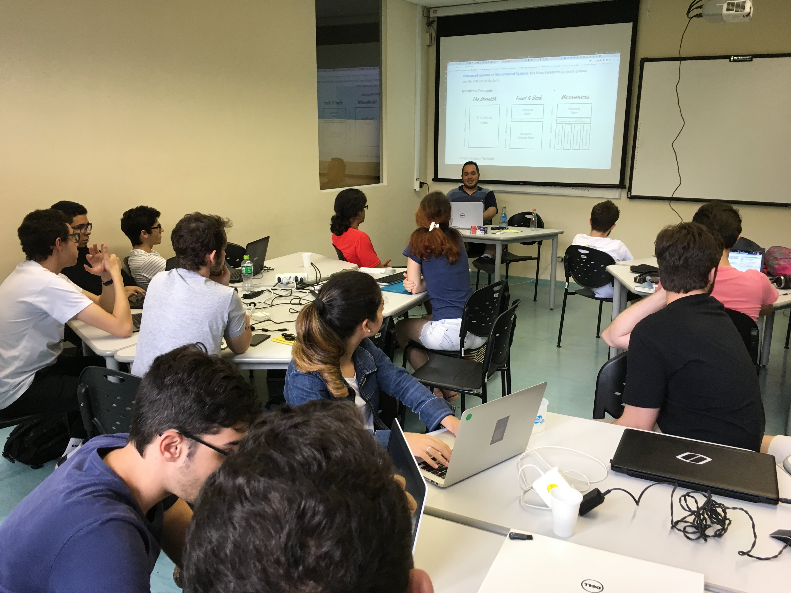
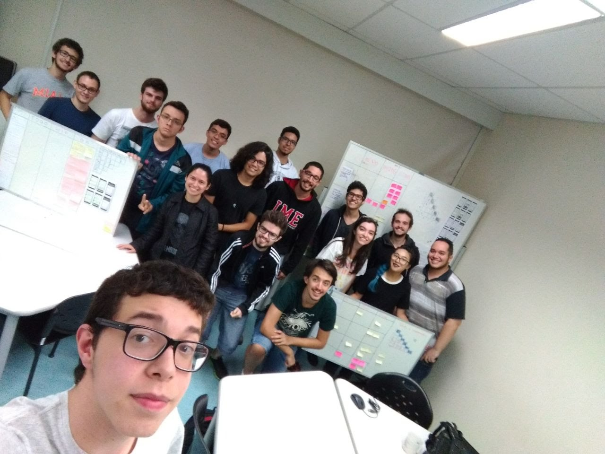
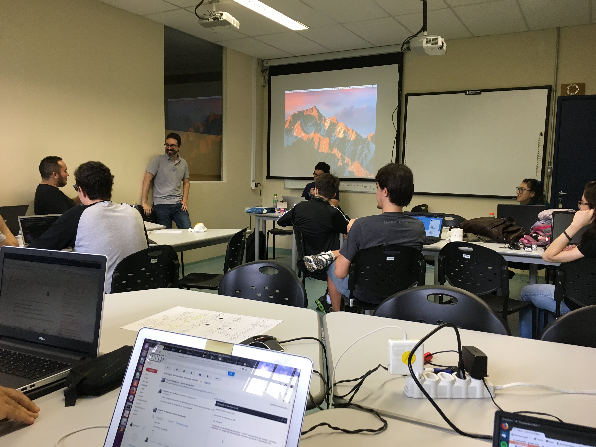
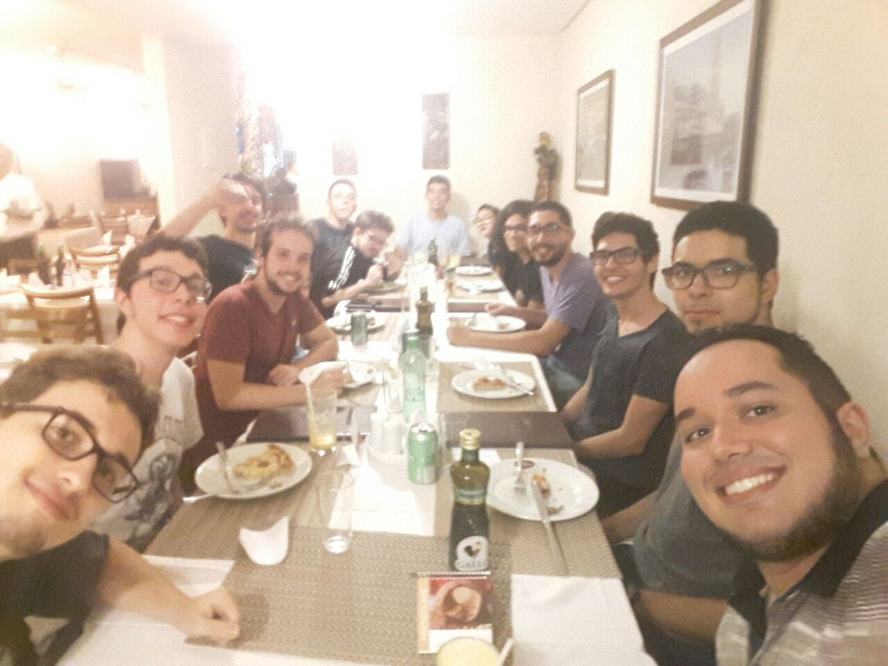

Escola de Verão. Desenvolvimento inicial do projeto Eris.
Deu um trabalhão, mas conseguimos nos organizar e fazer as coisas.
Durante a escola tivemos 4 ou 5 palestras, todas informativas e divertidas.
E ainda teve comemoração depois! Muito obrigado Codus.
Conseguimos terminar o DB, fizemos um Front-End e boa parte do Back-End.
Ficou de tarefa terminar o Back-End (autenticação e triggers) e implementar as APIs para o Front ficar ativo.
Produzi um texto para introdução da SIGEX, o mesmo pode ser lido na íntegra a seguir:
Fala galerinha! Na semana que vem vai começar a #SIGEX (Semana de Integração aos Grupos de EXtensão). Será uma série de atividades dos grupos de extensão do Bacharel em Ciências da Computação do IME para quem quiser saber mais sobre eles e como participar. Os grupos atuam em diversas áreas e estão abertos a toda comunidade USP! As atividades começarão sempre às 14h30 no Bloco B do IME. Para os interessados em brincar com hardware, no dia 12/3(segunda -feira) o pessoal do @HardwareLivreUSP estará no CEC (sala 2). O grupo tem reuniões semanais desde o final de 2013 e novidades para 2018, como uma série de palestras e a administração das impressoras 3D do IME. Saiba mais em: http://hardwarelivreusp.org No dia 13/03 (terça-feira) é a vez do @USPGameDev. Quem tiver interesse na criação de jogos encontrará no grupo um ambiente legal para trocarem conhecimento e desenvolverem seus projetos ou até mesmo montarem equipes para participarem de game jams. Saiba mais em: https://uspgamedev.org/ A computação é uma ferramenta poderosa para fazer o mundo melhor e o @TECS.USP, um grupo focado computação social, estará no dia 15/3 (quinta-feira) no auditório Jacy Monteiro para falar mais como eles usam a tecnologia para contribuir para a sociedade e seus projetos para 2018. Saiba mais em: https://www.ime.usp.br/~tecs/ Já pensou em ganhar uma maratona só com o poder da mente? O @maratonIME estará no dia 19/03 (segunda-feira) no CEC (sala 2) para mostra como! O grupo é focado em programação competitiva e oferece aulas, treinos e divulgação de materiais de apoio para a @Maratona de Programação e outras Olimpíadas de Conhecimento. Saiba mais em: https://www.ime.usp.br/~maratona/ Tecnologias web, hackathons, desenvolvimento de projetos e git são algumas das coisas que o @USPCodeLab irá apresentar no dia 20/03 (terça-feira) na sala B-5. O USPCodeLab participa, organiza e divulga eventos e projetos tecnológicos além dar palestras sobre #HTML, #CSS e #JS. Saiba mais em: https://codelab.ime.usp.br/ Para fechar com chave de ouro, criptografada com RSA e assinada com GPG, o pessoal do @IMEsec estará no dia 21/03 no CEC (sala 2). Focados em segurança da informação, eles estão preparando uma atividade bem legal para os ingressantes! Saiba mais em: https://www.ime.usp.br/~imesec/ Link para a #Cicada: https://www.ime.usp.br/~imesec/sigex/ Estamos preparando tudo com muito carinho, então podem espalhar para os amigos e amigas que serão todos muito bem vindos! TL;DR Dia 12/3 começa a #SIGEX, um evento para conhecerem mais sobre os grupos de extensão do Bacharel em Ciências da Computação. Sempre as 14h30 no Bloco B - IME. Para mais da programação, olhem a banner ou leiam acima ! Todos convidados.
Nos primeiro 30 minutos ocorreu uma reunião geral, onde recapitulou-se o que estava ocorrendo no grupo.
Organizamos as equipes iniciais para continuar a trabalhar no Eris e começar o Hacknizer. Os meninos do projeto Iris continuaram seu projeto.
Fiquei na equipe do Hacknizer e discutimos sobre qual seria o MVP.
Foi uma longa conversa sobre quais eram os objetivos do projeto e qual seria o essencial para a plataforma.
Concluimos que o Hacknizer tem 3 estágios:
Como ferramenta ele deverá auxiliar o USPCodeLab no processo de organizar as hackathons. Dos quais chegamos a dois produtos:
Agora é começar a organizar a equipe para desenvolver os produtos iniciais.
Como plataforma o Hacknizer se mostra como algo acessível a outros organizadores e com um pool de usuários participantes. Já como sisteme ele será uma central tanto para organizar, descobrir, administrar, como participar também. O foco é sempre ter uma ferramenta mais poderasa, capaz de organizar todos os detalhes do evento.
Também ficou para a equipe geral, continuar com o site do UCL2.0 e correr com o material de HTML, CSS e JS (o que inclui uma calculadora que já apresentável mas será melhorada).
Por fim, estamos trabalhando em possíveis parcerias com o pessoal do IMEjr, com um projeto da FAU de restaurar web art dos anos 2000 e acertando os detalhes de parcerias com a VTEX. A interação com outras equipe e grupos é algo importante para a equipe.